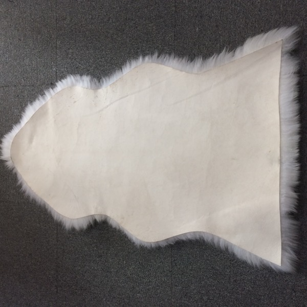

Premium Sheepskin Wheelchair Cushion
$89.99
Premium sheepskin wheelchair cushion providing superior comfort and pressure relief. Natural merino wool is anti-bacterial, breathable, and temperature regulating. Machine washable for easy hygiene maintenance. Essential for elderly care and disability support.
Specifications
- Material: Australian Merino Sheepskin
- Size: Standard Wheelchair (45cm x 40cm)
- Origin: Australian Made
- Color: Natural Ivory
- Features: Anti-bacterial, Breathable, Machine Washable, Non-slip Base